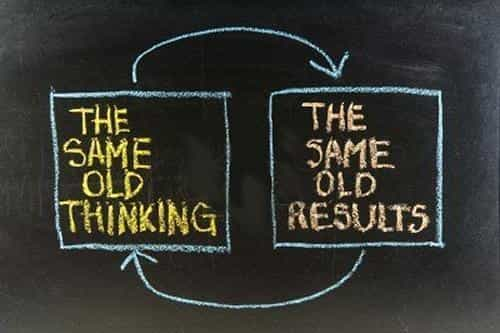

Corey is an iconoclast and the author of 'Man's Fight for Existence'. He believes that the key to life is for men to honour their primal nature. Visit his new website at primalexistence.com


With another year gone, it’s time to reflect on what you accomplished and what you couldn’t. And if you’re like any other ambitious man out there, you would probably have a lot of regrets on the opportunities missed and things you wish you had done better. Before you start planning yet another new year’s resolution, let this list help you make next year even better.
Assume that you have full control over everything that matters in your life. No more excuses, no more blaming, no more bitching about how the world is stacked up against you. It’s not easy, but it’s quite simple: change yourself and your environment to suit your needs, stop trying to change what you can’t and accept them, and adapt to your situation as necessary. If you want a better life, hold yourself totally responsible.

I realized this more this year than ever before: people spend way too much time reading and talking about politics instead of doing things that bring value. People either go on the Internet to complain and whine about what’s happening around the world that they don’t like, or, boast about how the world will be better because X happened or if only their vision for a better society came true. All this political nonsense has become no different from women gossiping about celebrities’ lives or boring people talking about their favorite television shows as if any of it is real. So, if you want next year to be better for your life, either: take active part in making political change (online activism doesn’t count), or, don’t read anything and don’t say anything about politics and focus on yourself. Put more simply: Do something about it or stop reacting.
No matter what you may accomplish in the future, no matter how much of what you think will make you happy you attain, your level of happiness in the future will likely stay the same. Most people don’t realize how great they already have it until they lose it. Instead of waiting for that eventuality, try to appreciate what you already have by practicing gratitude. I know it’s not easy if you’re ambitious like me, so here are four that you can start with.
Some of you may disagree, but I believe having vague goals with solid system is better than having solid goals with vague plans. Goals often change and evolve over time as you gain more life experience, but the path towards accomplishment is usually solid and requires your dedication. So, if you’re planning to create another new year’s resolution that looks more like a wish list of things you want, scrap it and look for ways to engineer your lifestyle by planning a system for development instead.
You’re a slave to circumstances and weakness until you have the necessary discipline to hold steady. My biggest regrets of this year happened because stress and emotional disturbance destroyed my productivity and mental frame. I lost countless hours that could have been put to work and embarrassed myself by being wavered by mere feelilngs. If you want to do anything better next year, learn to cultivate discipline first and foremost.

Arguing is a dumb waste of time that gets you riled up for no reason. If you value your time, don’t do it. And always remember: Action > Words.
I’ve noticed that all the guilt I have about having wasted my valuable time comes down to the fact that I gained no lasting value out of it. For example, I feel bad about all the time that I spent playing video games and watching films because I gained nothing worthwhile out of them, only momentary pleasure. On the other hand, I have no guilt associated with all the time I spent working out or learning something valuable—even when I failed and even if they were painful—because what I gained from them still stays with me. Aim long-term and learn to enjoy the process.
It’s easy to get stuck in a loop in our modern world. If you feel bored or unmotivated, try something completely different to shock yourself alive.

Sometimes, it’s more important to cut out the bad activities than to do something good. If you’re serious about making your life better, the time is now to stop the thing that’s holding you back. Shed the old you to renew yourself.
One of the worst things you can do in bed.
As someone who gets completely derailed if sleep is delayed by an hour or if I have to wake up earlier than usual, I don’t how so many others manage to function with irregular sleep patterns. Sleep is a vital aspect of your health and you should aim to prioritize it as much as exercise and diet. Read this article of hours to get you started.

I’ve mentioned meditation before in my other articles, but I have yet to practice it myself on a regular basis. For the upcoming year, I plan to meditate daily to develop greater focus, inner peace, and mental fortitude and you should consider doing the same as well.

By far the most important lesson I learned this year was that nothing matters if you’re not content. Sure, you could potentially devote yourself to a higher meaning or purpose to forget about how brief and insignificant your life is in the grand scheme of things, but why not do it in a position of contentment? Why live a life of perpetual frustration and longing where you constantly chase things that you think will satisfy you? Whatever you want in life, they will not go away just because you decide to be content with where you are now. In fact, contentment may even help you achieve your goals better as you won’t be as outcome-oriented, allowing you to focus more on the process instead. No amount of money, sex, and “success” is worth grinding your life away.
I see a year as a microcosm of life. You make plans, you have expectations, but things unfold in ways you didn’t expect at all. At the end of it all, you get to look back and reflect on what has come to pass and realize just how fast time goes by. But unlike life, you get another year, another chance to do better. We shouldn’t take such an opportunity so lightly.
Read More: 3 Ways To Make Better New Year’s Resolutions